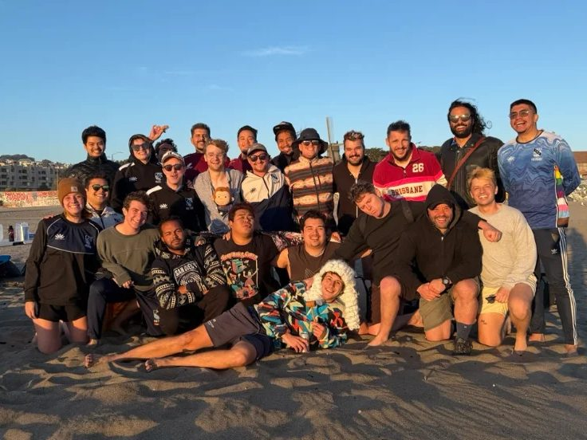
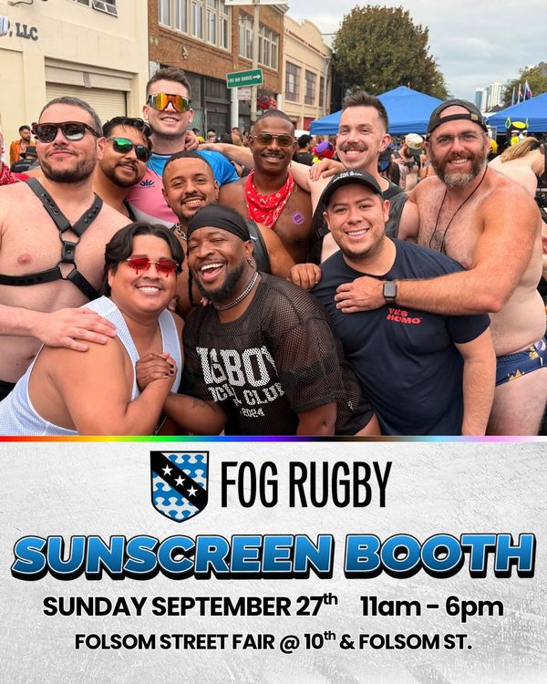
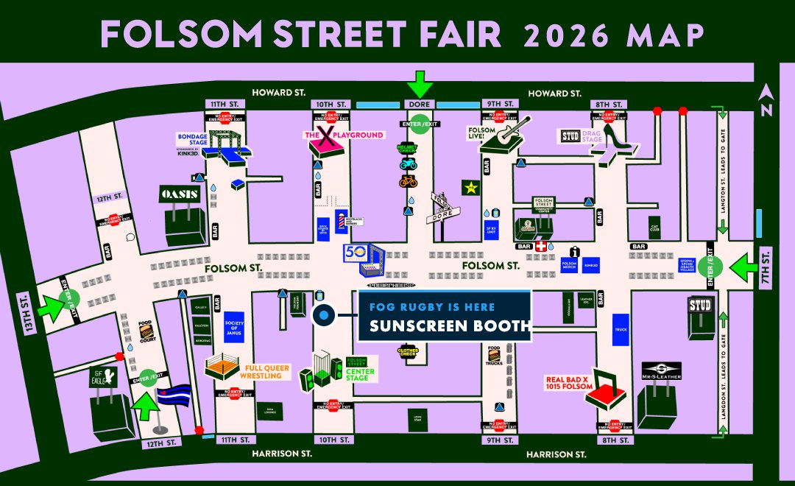
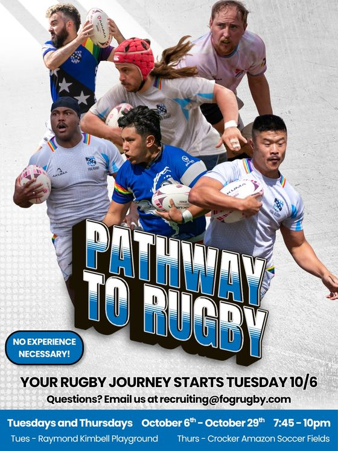

|  Board · Coat check · Sunscreen · Pathways · RuckTacular · Calendar · Feedback | | | Happy Folsom weekend! Thank you, volunteersG'day folks, and thank you. So many of you are giving up part of your Folsom weekend for the club, and it means a lot. Every tip at coat check and every dollar at the sunscreen booth goes back into your season: field rental, equipment, socials, player scholarships and tournament registration. Thanks also to the honorable judge Mike "Ratty" Ratcliffe for his final rulings, and to everyone who came to the Beach Bash and Kangaroo Court. Your teammates organised the whole thing. Your new board met for the first time on 8 September. We're getting our financials in order, bringing the club back into compliance with the IRS, and building tools that make it easier for you to share your own ideas. Our next meeting is on 4 October. We'll send a calendar invite, keep time for open questions, and collect questions in advance, so if something's on your mind, start thinking about it now. If you're on a shift, everything you need is below. If you're not, there's still room on both coat check shifts and at the booth on Sunday. After that, Pathway to Rugby starts on 6 October, so bring along anyone who's been curious. ROLL FOG ROLL  | Justin Melbourne President, San Francisco Fog RFC |
 Kangaroo Court and Beach Bash, Ocean Beach Key dates Safety tips for the weekend | Look out for each other. If someone or something feels off, tell your shift lead or venue security. | | Consent first, always. Ask before you touch anyone, and that includes putting sunscreen on them. | | Drink water, eat something, and take breaks when you need them. Just ask your lead. On Sunday, wear a hat and use our sunscreen. | | Keep your phone, ID and wallet on you, and plan how you're getting home. Street closures and late-night Muni can change your route. | | Save the drinks for after your shift. If you can't make it or you're running late, email Justice as early as you can. |
Support your club Can't make a shift? A donation helps just as much. Scan a code or tap a button. Only Mazlo gifts come with a tax receipt. Tax receipt included Mazlo Give through our fiscal sponsor, Dancers' Group, a 501(c)(3), and get a receipt for your taxes.
donate.mazloweb.com |
| Straight to the team PayPal Pay the club directly with PayPal or a card. No tax receipt.
paypal.com |
| Straight to the team Zelle Send from your banking app to tag fogrugby, 415-503-7480 or clubhouse@fogrugby.com. No tax receipt.
415-503-7480 |
|
| Please welcome to the board Luke Kushner |  | Director of Game Day Socials Luke has filled the vacant seat on the board. He'll look after third-half hospitality, keep our social traditions going and help host visiting clubs after the match. If you have ideas for game day socials, or you'd like to help out, Luke would love to hear from you. And if you see him this weekend, give him a big welcome. |
|
| Sat Sep 26 · SVN West · 21+ Magnitude coat checkMagnitude is Folsom's official Saturday night party, and they've invited us back because we did such a good job last time. They're expecting 1,800+ people, and it's the last big event at SVN West before the building makes way for apartments. | How it worksCoat check is free for guests this year, so everything we raise comes from tips, through our Venmo signs and a cash tip jar. Guests bag their clothes, you attach a numbered ticket, and the bag goes into the holding area in number order. The guest keeps the other half of the ticket (suggest they snap a photo of it) and shows it to you on the way out. When it gets busy, a few of us will walk the line so people are bagged up before they reach the desk. We'll show you all of this on the night. | What to expectMagnitude is a sex and kink positive party, so people will be changing into their outfits. I don't expect nudity at coat check, but it might happen. We're on the ground floor and the party is upstairs, so there's a bit of separation. You'll have your own private bathroom and breaks during your shift. If anyone gets frisky at the desk, we'll kindly point them to the dance floor so the line keeps moving. | What to wearWhatever makes you feel comfortable. Sporty, sexy and/or kinky all work. Honestly though, a big smile will earn you more tips than any outfit. I'm bringing spare rugby shorts and shirts if you want to borrow some. | Need to know | When | Saturday 26 September. Doors 9pm, close 4am. | | Where | SVN West, 10 Van Ness Ave, at Market | | Arrive | Early shift by 8:30pm for a quick training. Late shift by midnight. | | Getting in | Early shift: tell security you're with coat check and ask for Melbourne. Late shift: you're on the guest list. Bring photo ID and expect a possible bag search. | | Perk | Free entry to Magnitude before or after your shift | | Leads | Justice Dumlao (early) and Justin Melbourne (late, overall) |
Open in Maps · About the party Can't make it, running late, or trouble getting in? Let Justice know as early as you can. |
|
| Saturday night crew Coat check shifts | Arrive by 8:30pm Volunteers needed Early shift 8:30pm – 12:30am |
| Arrive by midnight Volunteers needed Late shift 12:00am – 4:00am |
|
| 2 early and 2 late spots still open. Volunteers get into Magnitude free. |
|
| Sun Sep 27 · 10am–6:30pm · Folsom Street Fair Sunscreen boothPut sunblock on people, get the crowd excited about the booth, or run our games. Speaking from experience, it's one of the most fun ways to hang out with your teammates and meet the wider community. It's part of this year's rookie house challenge, and we've saved spots for sophomores and vets too. If you remember your first Folsom, come help the rookies through theirs. |  | Find the booth 10th Street, below Folsom Look for the SF FOG RUGBY sign just south of Folsom. The fair runs 11am to 6pm. Shifts start at 10am and finish at 6:30pm so we can set up and pack down. |
|  | Booth shifts | | Name | Shift | | | Justice Dumlao Lead | All day | | | Luigi | 10am – 12:30pm | | | David Mendez | 10am – 12:30pm | | | Carlos | 10am – 2:30pm | | | Paul Varosy | 10am – 2:30pm | | | Nate Durand | 12pm – 2:30pm | | | Micki | 12pm – 2:30pm | | | Theron | 12pm – 6:30pm | | | Felix Roman | 12pm – 6:30pm | | | Diego Sanchez | 12pm – 4:30pm | | | Lukas Resch | 12pm – 4:30pm | | | Marc G. | 2pm – 4:30pm | | | Bryan Langley | 2pm – 4:30pm | | | Wesley Wong | 2pm – 6:30pm | | | Ikaika | 3pm – 6:30pm | | | Justin Melbourne | 1pm – 6:30pm | |
| There's room for more hands, especially over the lunchtime rush. |
|
| Starts Tue Oct 6 · Free Pathway to Rugby: every. body. |  | Our free intro to rugby for people who have never played. There are positions for every body, and most of the squad started here. You'll meet half of SF at Folsom this weekend. The hottest thing you can do is tell them about Pathways and send them to fogrugby.com/p2r. | When | Tuesdays & Thursdays, Oct 6 – Oct 29, 7:45 – 10pm | | Tues | Raymond Kimbell Playground | | Thurs | Crocker Amazon Soccer Fields |
Share it with your friends Questions? Email recruiting@fogrugby.com. |
|
|
| Welcome to Endless Summer RuckTacular: San Diego, Dec 3–6San Diego Armada are hosting. It's the whole club's December trip, so book the time off and start looking at flights. |  | Thu Dec 3 Early arrival Arrivals, 2pm naked rugby at Black's Beach (everyone welcome, all bodies), sunset hang from 6. |
| Fri Dec 4 Welcome day Hotel check-in and welcome table, 4pm Presidents' meeting, 7pm drink-up at Number One Fifth. |
| Sat Dec 5 Tournament day Coffee from 7am, kickoff 8am, rugby all day, free concessions, 4:30pm awards, 9pm official after-party at Rich's. |
| Sun Dec 6 Survivors Brunch at Uptown Tavern, 10am. Final goodbye drinks at Number One on Fifth, noon. |
|
|
| Fall 2026 On the calendar | | Sep 26 | Magnitude coat check, SVN West, 8:30pm
Volunteers needed | | Sep 27 | Folsom Street Fair sunscreen booth, 10th below Folsom, 10am – 6:30pm
Volunteers needed | | Oct 4 | Board meeting, open to everyone | | Oct 6 | Pathway to Rugby begins, Raymond Kimbell Playground, 7:45pm | | Oct 14 | The Fog turns 26 | | Oct 18 | Eagle Beer Bust, 3 – 7pm
Volunteers needed | | Oct 29 | Preseason practice begins | | Nov 7 | USF vs SF Fog | | Nov 14 | USF vs SF Fog | | Dec 3–6 | RuckTacular weekend, San Diego (tournament Sat Dec 5) | | Dec 12 | Preseason closer, friendly, opponent TBD |
|
| Board feedback Tell the board | We're a new board and we'd like to know how we're doing. Share feedback, an idea for improving the club, or a question you'd like us to answer at the 4 October meeting. | Five quick questions | 01 | What's it about? | | 02 | Which part of the club? | | 03 | How do you think the board is going? | | 04 | Your feedback, idea or question | | 05 | Should we raise it at the 4 October meeting? |
Tap below and we'll open an email with the questions filled in. Answer what you like and hit send. Prefer to write it yourself? Email board@fogrugby.com. |
|
|  | San Francisco Fog RFC News from the club for players, supporters and friends. fogrugby.com
Instagram
TikTok The San Francisco Fog Rugby Football Club is a fiscally sponsored project of Dancers' Group, a 501(c)(3) non-profit organization. |
| |
|